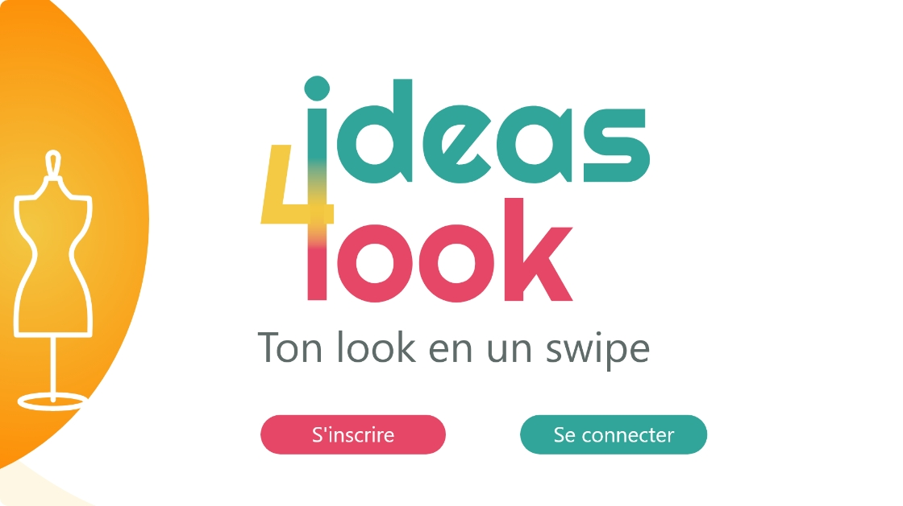

Ideas4Look Ideas4Look Ideas4Look Ideas4Look Ideas4Look Ideas4Look Ideas4Look Ideas4Look Ideas4Look Ideas4Look Ideas4Look Ideas4Look Ideas4Look Ideas4Look Ideas4Look Ideas4Look Ideas4Look Ideas4Look Ideas4Look Ideas4Look Ideas4Look Ideas4Look Ideas4Look Ideas4Look Ideas4Look Ideas4Look Ideas4Look Ideas4Look Ideas4Look Ideas4Look Ideas4Look Ideas4Look Ideas4Look Ideas4Look Ideas4Look
Refonte graphique du site Indiglu
